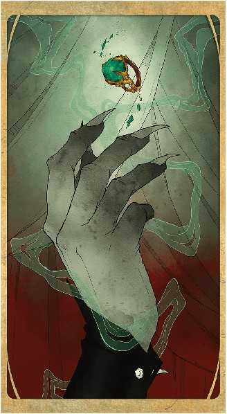

第二十一章：利爪 Talons

本章介绍了受万象无常牌启发的怪物，依首字母排序。《怪物图鉴》的前言讲述了如何使用这些数据卡。某些生物可以用武器造成非寻常的伤害类型和施放以非典型方式发挥作用的法术。这种例外是来源于资料卡上的一种特殊特性，代表了该生物如何使用自己的武器或施法；该例外不会影响武器或法术在其他生物手里所发挥的效果。 若该生物的数据卡在名字下的括号内包含了职业，则该生物视为对应职业的一员，用以满足魔法物品的先决条件。